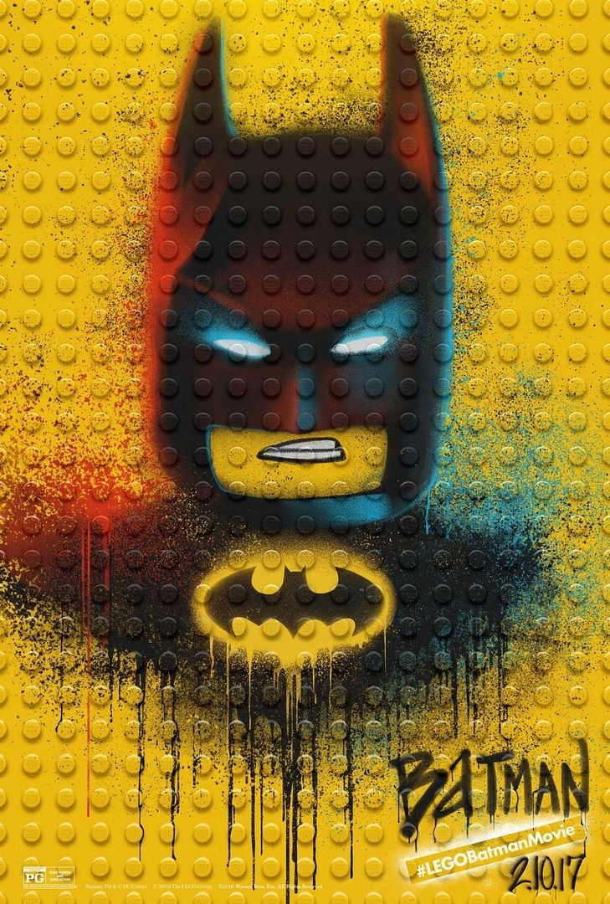

Descripción
En esta divertida y colorida aventura, Batman, el justiciero de Ciudad Gótica, debe aprender a trabajar en equipo si quiere salvar la ciudad de la invasión del Joker y sus secuaces. Pero no estará solo, contará con la ayuda de Robin, Batgirl y Alfred.
Ficha Técnica
- Director: Chris McKay
- Guionistas: Seth Grahame-Smith, Chris McKenna, Erik Sommers, Jared Stern, John Whittington
- Reparto de voces: Will Arnett (Batman), Michael Cera (Robin), Rosario Dawson (Batgirl), Zach Galifianakis (El Joker)
- Género: Animación, Acción, Comedia
- Año de estreno: 2017